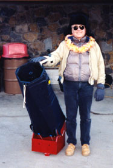
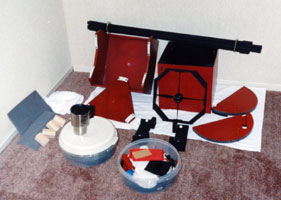
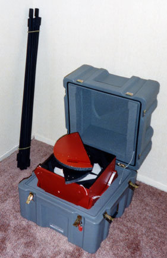

|  |
The Penultimate Session
I slept as late as I could. After I got going, I bought dinner for the friends who had done the same for me earlier in the week. My list of early-evening objects was cleaned out, so we had time for a leisurely meal. I arrived at the Onizuka Visitor Center late in twilight. For a few hours, I had nothing much to do but chat and look at the sky. Several staff members expressed opinions about the most impressive and spectacular celestial sight visible from Mauna Kea. There was general consensus what that was, and I agreed. The most spectacular cosmic view from Mauna Kea, and the finest deep-sky target I have ever looked at, is our own galaxy, not piecemeal, through telescopes, but as a single object, seen with the naked eye.
I was primed to ponder the view of the Milky Way from southern locations, by the experience of a fellow graduate student years ago. He came home from an observing run on a Chilean mountaintop, where Sagittarius culminates straight up, and couldn't rave enough about the spectacle. I could see what he was talking about from central California, knowing where to look and what to expect. Yet the view from far enough south to see well beyond Scorpius is unmatched: The Milky Way is a classic edge-on spiral, with central bulge and dark lane. In visible wavelengths, it looks rather like M104, but from our close-up, insider's viewpoint here on Earth, it spans the sky, horizon to horizon, and then some.
There are many decent photographs, montages, or synthesized images that show the entire Milky Way, or at least the central portions. My web search turned up several nice ones, including
http://www.astropix.com/HTML/D_SUM_S/MILKYWAY.HTM
http://www.nofs.navy.mil/projects/pmm/universe.html
http://adc.gsfc.nasa.gov/mw/milkyway.html.
There are lots more. Look at one to understand what I saw.
|  |
Stardust is visible on the galactic north side of the offshoots for much of their length. It defines their northerly boundaries. The northern dark offshoot, the Cygnus Rift, is well-known to northern amateurs. Some of us are car-crazed California kooks disguised as amateur astronomers: We refer to the long, curved streak of Milky Way at its northern boundary as the "Off Ramp." The wide end of the southern offshoot is visible from mid-northern latitudes, west of Scorpius, enough so that some native Americans described the combined complex of all these bright and dark areas as "the hands of Father Sky", but the full symmetry of the pattern is not apparent unless you can see all the way to alpha and beta Centauri.
From a site as dark as Mauna Kea, the vast amounts of dark matter in or near the galactic plane stand out readily against the glow of stars beyond. Most of the naked-eye star clouds located close to the line of sight to the center of the galaxy are relatively nearby. The actual galactic center is highly obscured. One web page I cited shows views in several wavelengths, including some that make it past the dust: They give an entirely different picture, one that is in some sense more realistic. Yet it is dark clouds that provide the specific character of the naked-eye view of our galaxy. The dark lanes themselves are the largest such areas that are clearly defined. The Coal Sack, a big blot at the southeast border of Crux, is probably the most famous cloud, but northern observers should not miss the Pipe Nebula, in southern Ophiuchus. It resembles a conventional smoker's pipe, with the bowl at the east and the stem running east-west. This nebula is about as long as the lid of the teapot of Sagittarius is wide, and is clearly visible to the naked eye from a dark site.
|  |
Other physical features of the galaxy are detectable in the sky, if you know what to look for. The area from Scorpius through Centaurus contains many blazing suns of early spectral type. These young blue-white giants comprise one, or perhaps several, physically associated groups, located in places where substantial star formation has taken place in relatively recent times. My doctoral thesis research obtained a point measurement of the temperature, density, and velocity vector of the interstellar gas, close to the solar system, but before beginning to experience the local effects of the Sun. When I corrected the observed velocity vector for the motion of the Sun through the local group of stars, the interstellar gas appeared to be flowing outward from that vast collection of young giants. Perhaps past supernovae among them had caused the gas to expand outward, as within a swelling balloon or a growing bubble. How strange to find the placid tidewaters of the solar system subtly lapped by long swells from distant, powerful disturbances, hundreds of light years away, storms beyond the far horizon of the outstretched sea of space. As a kid, I dreamed of travel to the stars, yet it seemed perhaps that they had come to me, instead.
Presently alpha Indi rose, and then the Peacock Star, so I placed my telescope for a good view of the southeast horizon and picked up the last few objects on my primary lists. Yet these were generally nondescript. I logged them all, double-checked and re-checked that I hadn't forgotten any, then drove down the mountain. It had been a rather light session - only 58 objects viewed - but I was glad for the chance to relax under the night sky. Back in Hilo, I moved the telescope inside. On the next afternoon, I disassembled and packed it for return to the mainland, and mailed myself a box of dirty laundry and heavy telescope hardware, to lighten my baggage for the trip home. Yet there was one night's observing yet to come: I had planned to spend the final evening of my vacation with my 14x70 binocular.
A Night With Binoculars
For me, astronomical binoculars are special-purpose instruments, for quick and easy wide-field views, so I almost always use them hand-held. My Orion "Giant" 14x70 - one of the last before the current, lighter, 15x70 was introduced - is perhaps the best of the half-dozen or so that I have owned. It is almost too large and too powerful to hold, which means it has almost exactly as much performance as I can handle. (By the way, be warned: The edge at which a hand-held binocular becomes unwieldy is sometimes very sharp, and varies from person to person.) I know several tricks for holding it unbraced, but when circumstances permit, I like to lean either myself or the binocular against something solid when I am using it, or prop my arms on a rigid surface, or something like that.
My rented Isuzu Rodeo had a two-piece back door. The rear window tilted up, and the lower door panel was hinged at the side. I parked it facing north - toward the summit of Mauna Kea - and sat on the rear threshold with the door pulled toward me, half closed. Thus I could brace arms and binocular on the top of the door for observing, and also get some shelter from the wind. From this position, I surveyed the part of the heavens that I had swept with the 10-inch. Sometimes I would look to see how a specific object appeared in the binocular. Sometimes I would notice something, and have to check my charts to see what it was. I also paid attention to large features, like star clouds, rifts, and dark nebulae, that were too big for the field of the Dobson.
I have been mentioning binocular observations of southern objects along with descriptions of them in the larger telescope, so I don't have a great deal to add that is new. Yet there is certainly plenty to do with a binocular in these skys. I logged more than fifty observations of southern objects with the 14x70, plenty to warrant having it along. The large, bright, and famous stuff - the eta Carina complex, omega Centauri, the Jewel Box, and numerous of the open clusters that I have already mentioned - all showed interesting detail. Alpha Centauri was resolved. And the prime object for binocular astronomy was the galaxy itself, as a whole.
If I had had no telescope, I would have been disappointed, but a night or two with a large binocular would have been very satisfying. You northerners who have an opportunity to travel south, but who do not have a portable large telescope, or are limited in budget or baggage allowance, by all means bring a binocular, and be prepared to enjoy yourself. A smaller one would do. For real saving in space and weight, consider a large-aperture monocular, if you can find one, and if you can't, you might get a suitably sized binocular with individually focusing eyepieces, and take it apart at the hinge. One of the popular small f/5 refractors, which come in 80, 90, and 100 mm aperture, might make an even more versatile package, but I suspect you would need a tripod for it. A monopod with a simple tilt head might make a good, compact support, for a binocular or for a low-magnification telescope.
Again wishing to use a familiar yardstick to evaluate both site and southern celestial wonders, I decided to review some Messier objects. I got carried away. In an hour or so cumulatively, spaced over the night, I went through eighty-three of them, from the Beehive and M67 all the way around to M2, M15, M30, and M39. That was easier than it sounds -I have been through the Messier catalog more than twenty times, and can find most of them without charts, and a 70 mm binocular of modest magnification is probably the easiest instrument for a Messier survey: It is capable enough to show them all without difficulty, and has a wide enough field to make finding them a cinch.
The southern objects fared very well in comparison. Except for the Beehive, and for the Messier objects in the Scorpius, Sagittarius, and Scutum Milky Way, the patch of heavens that was new to me had more stuff with interesting detail for the binocular, than that part of the Messier catalog that I could see.
The Messier objects also fared very well. As I cross-indexed my observations onto file cards, back at home, I noted that the cryptic notes I append to each such reference often indicated less detail seen in previous views of these objects with the 14x70, when I was doing a Messier survey with it not long after I bought it, than I could see from the Visitor Center. What's more, many of the observations for the 14x70 Messier survey were made from very dark sites in the southern Cascade Mountains, near Lassen Peak, at altitudes of 1.5 to 2.5 Km. I may have said it before, but let me say it again: The Onizuka Visitor Center on the side of Mauna Kea is a wonderful place for visual amateur astronomy.
Two hints of detail were particularly interesting. Both M83 and M51 showed what I would call anisotropic structure, whose nature I could not quite determine. That is, in binoculars of similar size, I regularly see these objects as diffuse patches whose brightness varies radially, and I can routinely see the companion to M51, NGC 5195, as well. But on this night, both galaxies showed hints of structure - something like filaments in the fuzz - that I had not noticed before with similar instruments. Clearly, the spiral arms were on the verge of resolution. Yet even knowing that these galaxies are spirals, I could not say that I saw spiral structure with the 14x70, only that there was structure present, just beyond my ability to detect precisely what it was.
I also used the binocular to push on the southerly limits of my main survey. As I said before, the Southern Pleiades, surrounding theta Carinae, was blocked from my big telescope by the wall of the Visitor Center observing patio. I had a nice view of it in the 14x70. I also saw a few other, more difficult, southerly objects. Peering south of Crux, I found several stars in Musca, and then noticed that alpha Musca, at beyond 69 degrees south declination, was visible to the naked eye -did I say that Mauna Kea was a good site? A bit more than half a degree north of alpha, I detected the barest hint of open cluster Harvard 6 in the binocular's field. I think that was the most southerly deep-sky object I observed during the entire trip.
I usually have a binocular handy when I observe, but only rarely use one much. This night was an exception. I logged 155 observations with the 14x70, more than on all the previous ones with it, put together.
As I drove down the access road from the Visitor Center, I noticed Alpha Centauri setting toward the summit of Mauna Loa. Shortly before I reached the Saddle Road, it winked out, and I knew that my astronomical vacation had truly ended. But the next day had one more pleasant surprise. As I staggered to the departure gate at Hilo's airport, wondering why I had made a reservation for the absurdly early hour of 9:28 in the morning, two of the friends I had met on the island stepped forward to greet me. They presented me with a lei - a real one, made with real flowers, in the finest Hawaiian tradition! How wonderful!
They say aloha can mean both "farewell" and "greetings." As my flight winged across the broad Pacific, away from Hawaii's frigid temperatures, thin air, and inky darkness, home to the soft sunshine and warm breezes of central California, that seemed appropriate. For I was already planning to return.
[Ed. Note - Be sure to attend the general meeting of the SJAA in August for Jay's presentation, "Jay Freeman Stargazes the Frozen Arctic Wastes of Hawaii."]